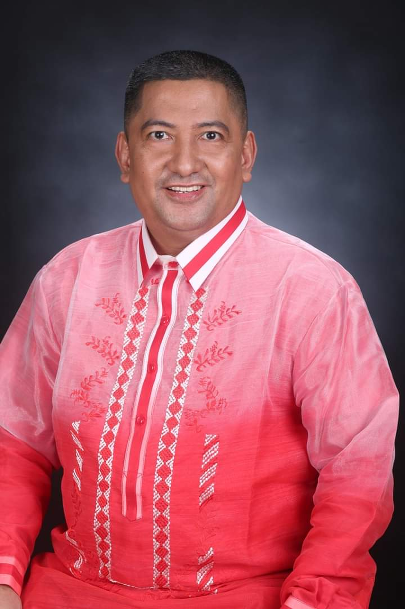
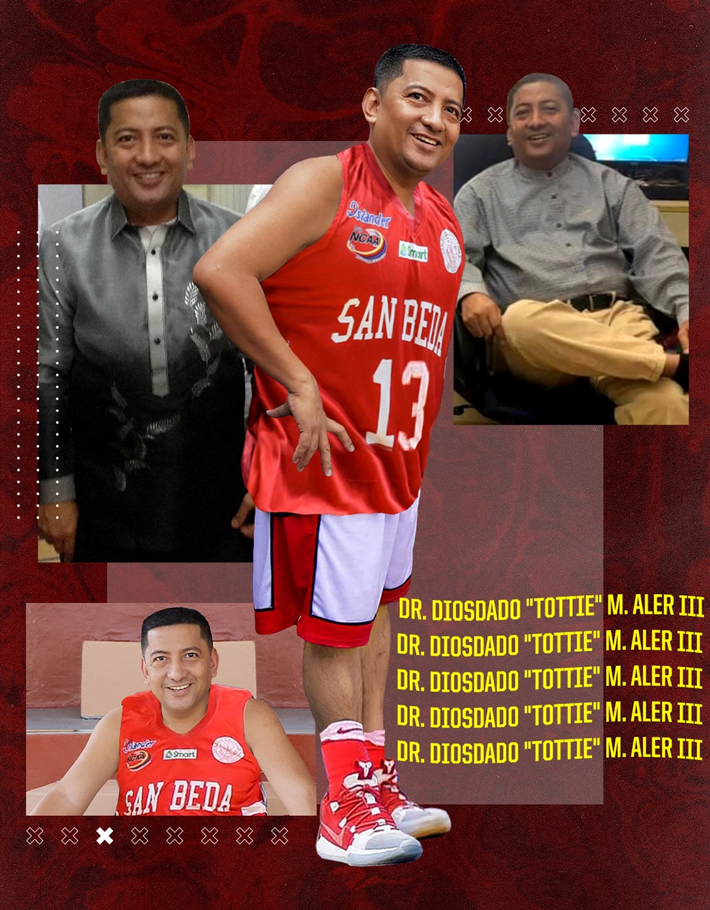
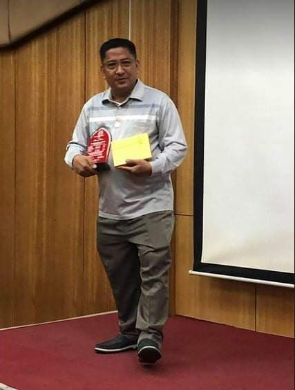

  
Experienced Information Technology Department Chairperson with a demonstrated history of working in the Higher Education industry. Skilled in E-Learning, Coaching, Staff Development, Educational Leadership, and Teaching. Strong information Technology professional with a Doctor of Education (Ed.D.) focused in Higher Education/Higher Education Administration from National Teachers College. Author and Publisher of Computer Books. Qualified Alison Publisher as of April 18, 2020.
• Extensive experience in teaching computer subjects such as Introduction to Computers, Basic Programming, Digital Logic Circuits, Computer Architecture, Data Communications, Management Information Systems, Information Resource Management, Feasibility Study/Research Project, Systems Analysis and Design, Code of Ethics for ICT Professionals, Operating Systems, Data Structures, Logic Formulation, HTML Programming, PHP Programming, Webpage Development, MS-Windows, MS-Office.
• Continuous professional updating by attending seminar/workshop/training sessions in the field of information and communications technology.
• Active involvement in professional organizations like Philippine Computer Society (PCS) and Philippine Society of Information Technology Educators (PSITE).
• Extensive knowledge and active participation in the accreditation process as a department chairperson for accrediting agencies such as PAASCU (Philippine Accrediting Association of Schools, Colleges and Universities) and IQUAME (Institutional Quality Assurance and Monitoring Evaluation).
• Actively serves the community by serving as President of the Villa Lessandra Homeowners Association Phase 1 in Bacoor Cavite. The community is composed of 100 households where as the president, I would act as the presiding officer in general membership meetings. Moreover, I act as a representative of our community to both the Barangay and Bacoor City Hall public officials.
• Active involvement in community outreach by serving as Microsoft Ambassador in Education through the conduct of Train the Trainers seminar/workshop for public school teachers.
• Selected as a Microsoft Innovative Educator Expert (MIEE) last November 2014. The task of an MIEE is to create and share Learning Activities to teachers around the world who are members of the Microsoft Education Network.
• Taught faculty members coming from both the General Education and Professional Program disciplines of San Beda College, the rudiments of using On-line Learning through the use of Edmodo and NEO LMS.
| Doctor of Education (Ed.D.) S.O. (C) No. 90-145001-0081 s. 2013 dated July. 19, 2013 |
National Teachers College J. Nepomuceno Street, Manila |
1997 - 2013 (graduated March 23, 2013) |
| Master in Information Technology (M.I.T.) (completed 27 units) |
Far Eastern University "East Asia College" Nicanor Reyes Street, Manila |
2010 - present |
| Master of Arts in Teaching S.O. (C) No. 1-02-0216 s. 1996 dated Oct. 22, 1996 |
Centro Escolar University Mendiola, Manila |
1993 - 1996 |
| Bachelor of Science in Computer Engineering S.O. (B) No. 3-17:1836 s. 1992 dated April 6, 1992 |
Adamson University San Marcelino, Manila |
1986 - 1992 |
| High School | National Teachers College J. Nepomuceno Street, Manila |
1982 - 1986 (graduated March 1986) |
| Elementary | Centro Escolar University Mendiola, Manila |
1976 - 1982 |